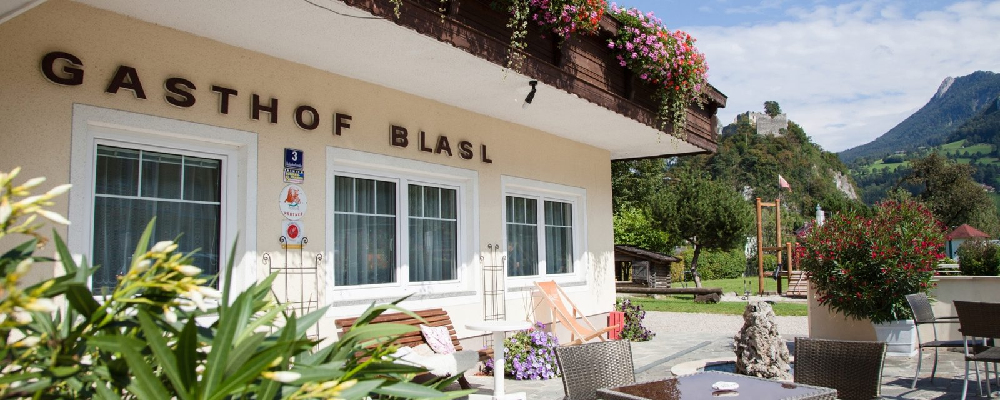

Zimmer
Fünf Einbettzimmer, zehn Doppelzimmer, ein Appartement mit zwei Räumen und eine Ferienwohnung mit 55 m² – alle mit Dusche oder Bad, WC, Gratis-WLAN, Kabel-HD-TV und teilweise Balkon.
Regionale Küche, hausgebackene Mehlspeisen, moderne Zimmer, ein kleiner Wellnessbereich und ein Garten mit Pool – geführt als Familienbetrieb in Losenstein, direkt am Radweg und in Bahnhofsnähe.

Mit schmackhafter, regionaler Küche, vegetarischer Auswahl und hausgebackenen Mehlspeisen, modernen Zimmern und einem romantischen, kleinen Wellnessbereich finden Sie bei uns eine herzliche Bleibe für Ihren Aufenthalt. Der Gasthof ist Nationalpark-Partner und Mitglied im Tourismusverband Steyr und die Nationalpark Region.
Im schönen Biergarten unter alten Nussbäumen und mit Blick auf die leicht erreichbare Burgruine lässt sich der Tag herrlich ausklingen. Zum Haus gehören außerdem eine Sonnenterrasse und ein großer Garten mit Pool – eine willkommene Abkühlung nach einer langen Tour.
Radler, Wanderer, Motorradfahrer und Nationalparkbesucher schätzen uns als Ausgangspunkt für ihre Touren. Das Haus liegt nahe dem Ortszentrum und in Bahnhofsnähe, eine autofreie Anreise ist also problemlos möglich. Der große hauseigene Parkplatz ist auch für Busse bestens geeignet. Die Romantikstadt Steyr ist nur 22 km entfernt, wunderschöner Naturraum beginnt vor der Haustüre.
Betriebsurlaub: Montag, 31.08. bis einschließlich Donnerstag, 17.09.2026.
An Ruhetagen bieten wir für Hausgäste Abendessen nach Vereinbarung an.
Fünf Einbettzimmer, zehn Doppelzimmer, ein Appartement mit zwei Räumen und eine Ferienwohnung mit 55 m² – alle mit Dusche oder Bad, WC, Gratis-WLAN, Kabel-HD-TV und teilweise Balkon.
Finn-Sauna, Dampfbad und BMT-Infrarotwärme, dazu der große Garten mit Pool. Die Benutzung ist für Hausgäste im Zimmerpreis inkludiert.
Frisch gekochte Köstlichkeiten aus der Region, vegetarische Auswahl und hausgebackene Mehlspeisen – in der Gaststube, im Biergarten oder in einem der beiden Extrastüberl.
Ennsradweg vor der Tür, Hintergebirgsradweg, 800 km Mountainbikestrecken, Roadbooks für zehn Motorradtage und Wanderungen im Nationalpark Kalkalpen.

Unser Familienbetrieb hat viel zu bieten: Der großzügige Spielplatz direkt beim Biergarten sorgt für fröhliche Kinder und entspannte Eltern. Im Haus gibt es für die ganz Kleinen Wickeltisch, Kinderhochstühle und Spielsachen, dazu verschiedene unterhaltsame Familienspiele. Im Lokal steht ein Billardtisch.
Für Gruppen und Familien sind in fast allen Zimmern Zustellbetten oder ein Kinderbett möglich. Kinder bis sechs Jahre nächtigen im Zimmer der Eltern kostenfrei.
Für Zeiten, in denen das Restaurant nicht geöffnet ist, finden Sie in der Lounge Kaffee, Getränke und Snacks – und einen komfortablen Platz, um sich mit Ihren Mitreisenden zu treffen.
An Ruhetagen bieten wir für Hausgäste auch Abendessen nach Vereinbarung an.
aus 257 Bewertungen
aus 21 Bewertungen, zuletzt Mai 2026
Quellen der Bewertungen: Booking.com und HolidayCheck. Bewertungsstände ändern sich laufend.
Sechs Ansichten aus dem Bildbestand des Hauses. Zum Vergrößern anklicken.
Ein Panoramarundgang durch den Gasthof besteht bereits und lässt sich in die neue Seite einbinden.
Ein Pickerl geht um die Welt. Holen Sie sich Ihren Aufkleber im Haus und machen Sie bei unserer Aktion auf Facebook mit – Ihr Foto vom Blasl-Pickerl, wo immer Sie unterwegs sind.